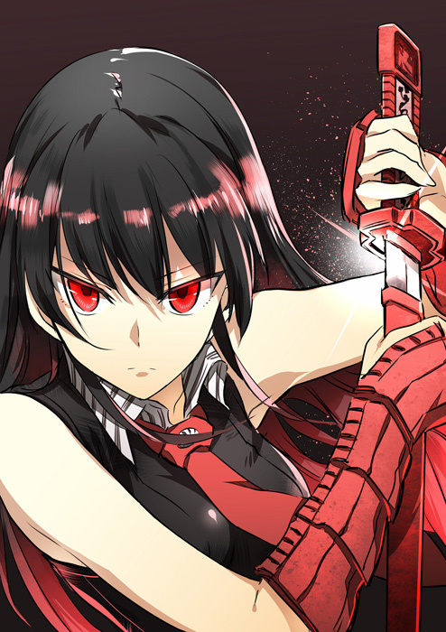

|
Akame ga Kill!

Título
em Japonês: アカメが斬る！
Categoria: Série TV.
Episódios: 24.
Produtor: Square Enix, White Fox, Sentai FilmworksL, TOHO animation.
Gênero: Ação, Aventura, Dark Fantasy.
Ano: 2014.
Duração: 23 min. por episódio.
Sinopse,
Em um mundo de fantasia, o lutador Tatsumi parte para a Capitol
para conseguir dinheiro para a sua vila que sofre de fome, mas acaba
encontrando um mundo de imaginável corrupção, a qual se espalha a
partir do depravado primeiro ministro que controla o jovem
emperador. Após quase se tornar uma vítima da própria corrupção,
Tatsumi é recrutado pela Night Raid, um grupo de assassinos
dedicados a eliminar a corrupção afligindo a Capitol matando
impiedosamente todos aqueles responsáveis por ela.
|